R/position-dodge.r, R/position-dodge2.r
position_dodge.RdDodging preserves the vertical position of an geom while adjusting the
horizontal position. position_dodge2 is a special case of position_dodge
for arranging box plots, which can have variable widths. position_dodge2
also works with bars and rectangles. But unlike position_dodge,
position_dodge2 works without a grouping variable in a layer.
position_dodge(width = NULL, preserve = c("total", "single")) position_dodge2(width = NULL, preserve = c("total", "single"), padding = 0.1, reverse = FALSE)
| width | Dodging width, when different to the width of the individual elements. This is useful when you want to align narrow geoms with wider geoms. See the examples. |
|---|---|
| preserve | Should dodging preserve the total width of all elements at a position, or the width of a single element? |
| padding | Padding between elements at the same position. Elements are shrunk by this proportion to allow space between them. Defaults to 0.1. |
| reverse | If |
Other position adjustments: position_identity,
position_jitterdodge,
position_jitter,
position_nudge,
position_stack
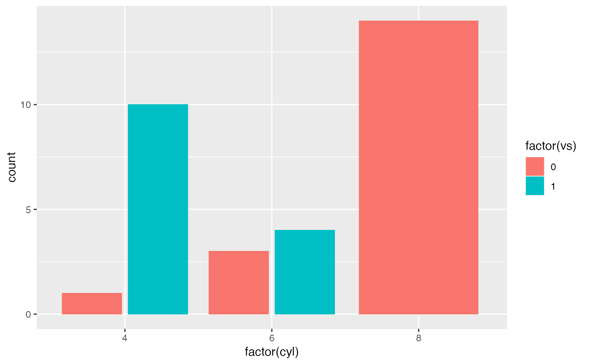# By default, dodging with `position_dodge2()` preserves the total width of # the elements. You can choose to preserve the width of each element with: ggplot(mtcars, aes(factor(cyl), fill = factor(vs))) + geom_bar(position = position_dodge2(preserve = "single"))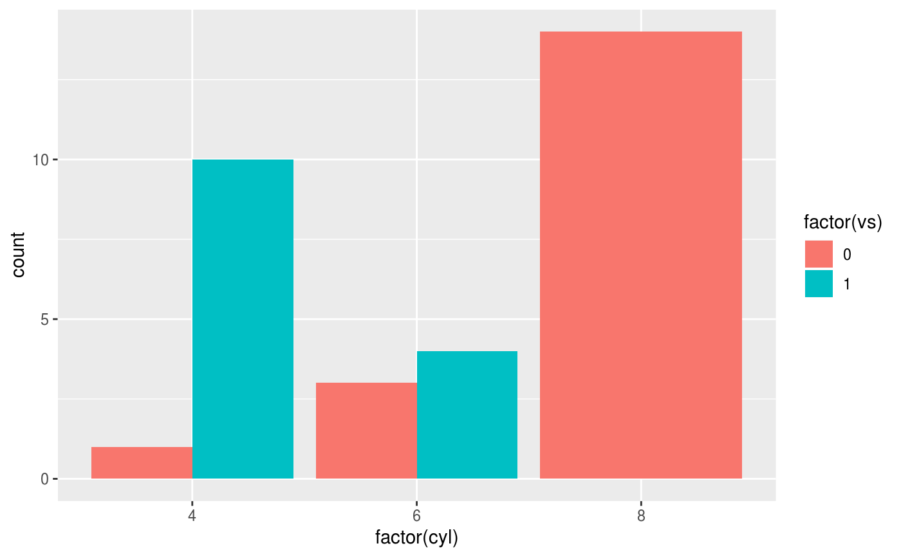#>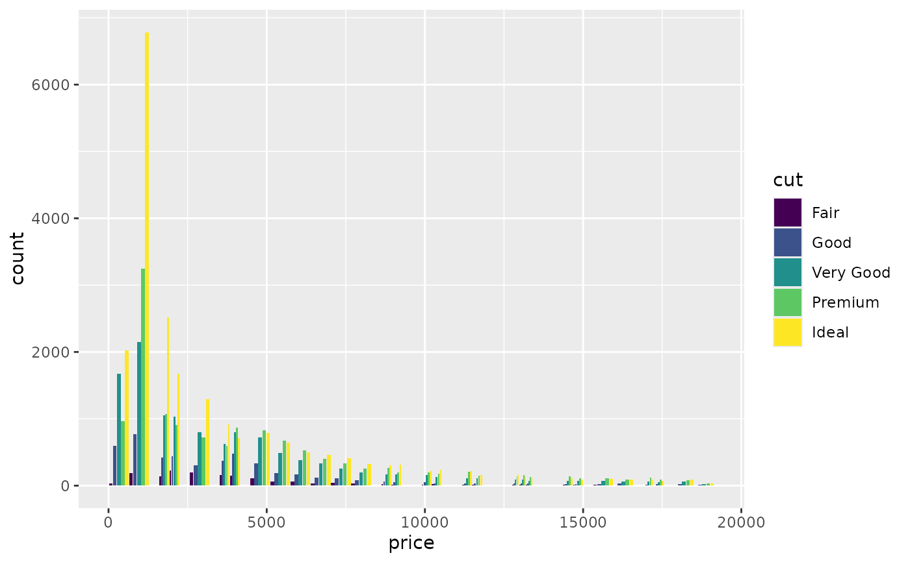# see ?geom_bar for more examples # In this case a frequency polygon is probably a better choice ggplot(diamonds, aes(price, colour = cut)) + geom_freqpoly()#>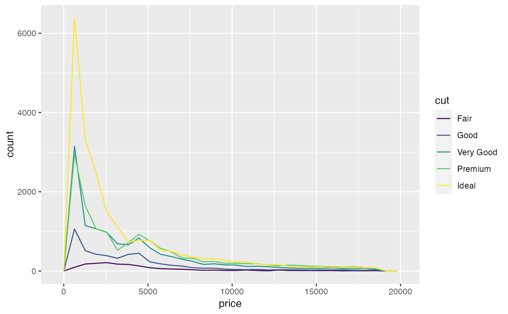# Dodging with various widths ------------------------------------- # To dodge items with different widths, you need to be explicit df <- data.frame(x = c("a","a","b","b"), y = 2:5, g = rep(1:2, 2)) p <- ggplot(df, aes(x, y, group = g)) + geom_col(position = "dodge", fill = "grey50", colour = "black") p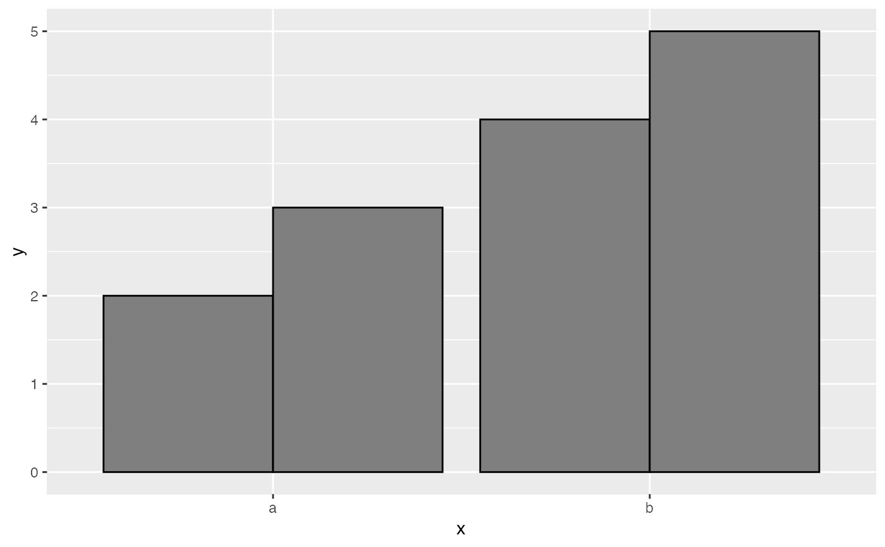# A line range has no width: p + geom_linerange(aes(ymin = y - 1, ymax = y + 1), position = "dodge")#> Warning: Width not defined. Set with `position_dodge(width = ?)`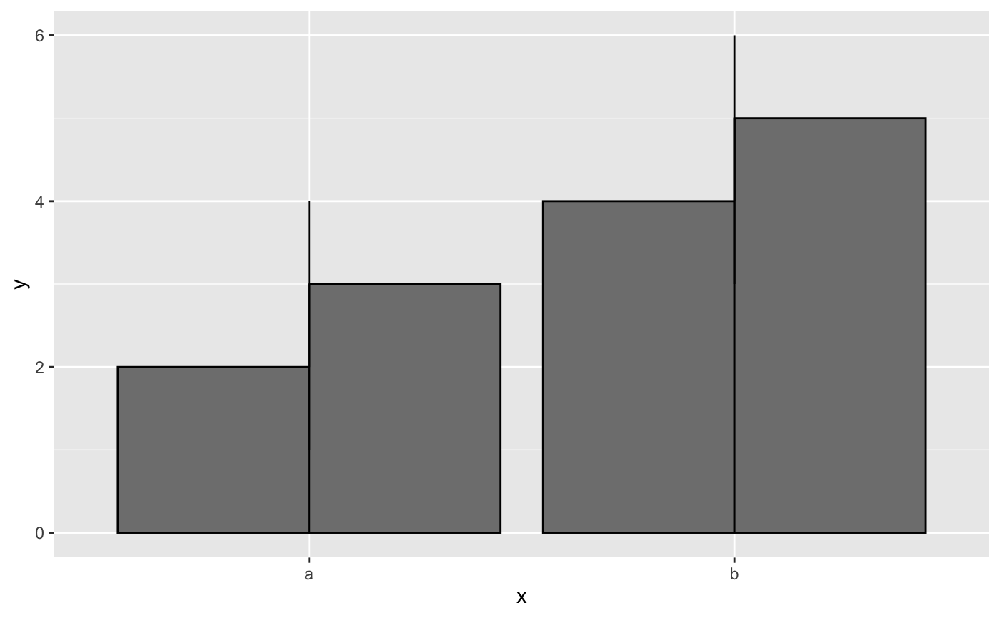# So you must explicitly specify the width p + geom_linerange( aes(ymin = y - 1, ymax = y + 1), position = position_dodge(width = 0.9) )# The same principle applies to error bars, which are usually # narrower than the bars p + geom_errorbar( aes(ymin = y - 1, ymax = y + 1), width = 0.2, position = "dodge" )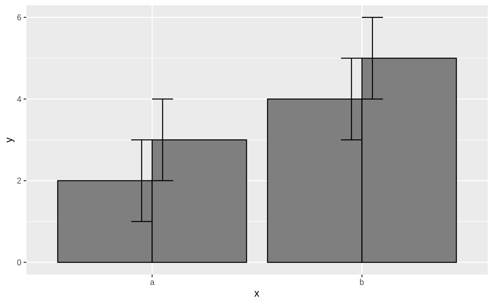p + geom_errorbar( aes(ymin = y - 1, ymax = y + 1), width = 0.2, position = position_dodge(width = 0.9) )# Box plots use position_dodge2 by default, and bars can use it too ggplot(data = iris, aes(Species, Sepal.Length)) + geom_boxplot(aes(colour = Sepal.Width < 3.2))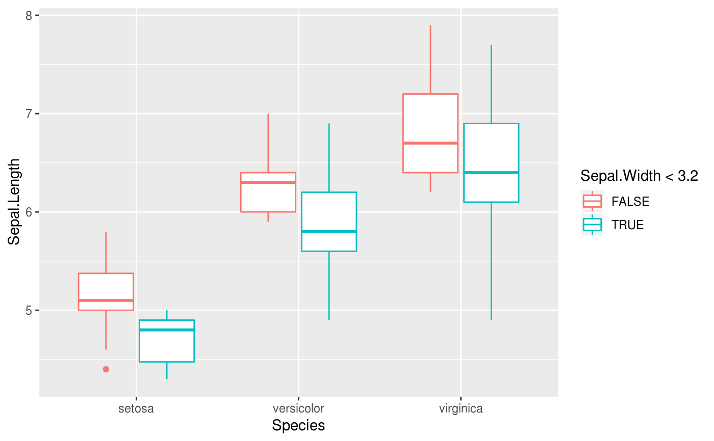ggplot(data = iris, aes(Species, Sepal.Length)) + geom_boxplot(aes(colour = Sepal.Width < 3.2), varwidth = TRUE)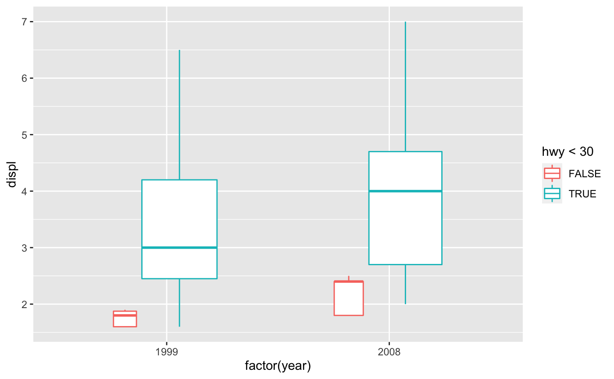ggplot(mtcars, aes(factor(cyl), fill = factor(vs))) + geom_bar(position = position_dodge2(preserve = "single"))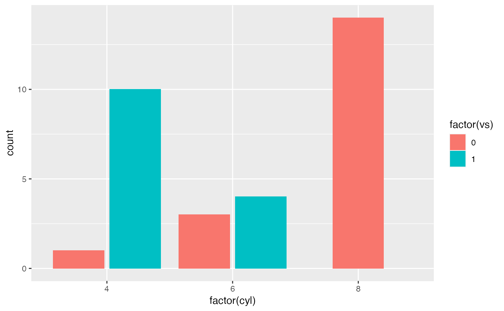ggplot(mtcars, aes(factor(cyl), fill = factor(vs))) + geom_bar(position = position_dodge2(preserve = "total"))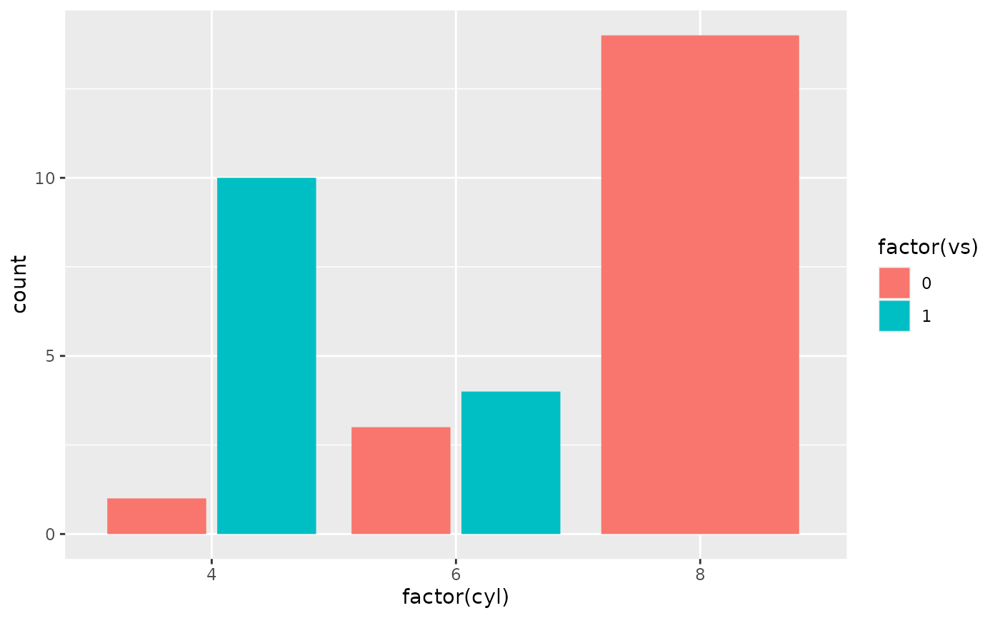